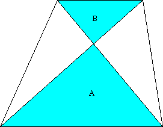
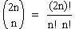

Let a, m, and n be positive integers, with a > 1, and m odd.
What is the greatest common divisor of am - 1 and an + 1?
Hint - Answer - Solution
Let x be a real number and n be a positive integer.
Show that [x] + [x + 1/n] + ... + [x + (n-1)/n] = [nx], where [x] is the greatest integer less than or equal to x.
Hint - Solution
An absentminded professor buys two boxes of matches and puts them in his pocket. Every time he needs a match, he selects at random (with equal probability) from one or other of the boxes. One day the professor opens a matchbox and finds that it is empty. (He must have absentmindedly put the empty box back in his pocket when he took the last match from it.) If each box originally contained n matches, what is the probability that the other box currently contains k matches? (Where 0  k
k  n.)
n.)
Hint - Answer - Solution
Find all solutions to c2 + 1 = (a2 - 1)(b2 - 1), in integers a, b, and c.
Hint - Answer - Solution
A trapezoid¹ is divided into four triangles by its diagonals. Let the triangles adjacent to the parallel sides have areas A and B. Find the area of the trapezoid in terms of A and B.
(1) A trapezoid is a quadrilateral with at least one pair of parallel sides. In some countries, such a quadrilateral is known as a trapezium.
Hint - Answer - Solution
A partition of a positive integer n is a way if writing n as a sum of positive integers, ignoring the order of the summands. For example, a partition of 7 is 3 + 2 + 1 + 1.
The table below shows all partitions of 5. The number of 1s column shows how many times the number 1 occurs in each partition. The number of distinct parts column shows how many distinct numbers occur in each partition. The sum for each column, over all the partitions of 5, is shown at the foot of the table.
| Partition | Number of 1s | Number of distinct parts |
|---|---|---|
| 5 | 0 | 1 |
| 4 + 1 | 1 | 2 |
| 3 + 2 | 0 | 2 |
| 3 + 1 + 1 | 2 | 2 |
| 2 + 2 + 1 | 1 | 2 |
| 2 + 1 + 1 + 1 | 3 | 2 |
| 1 + 1 + 1 + 1 + 1 | 5 | 1 |
| Total: | 12 | 12 |
Let a(n) be the number of 1s in all the partitions of n. Let b(n) be the sum, over all partitions of n, of the number of distinct parts. The above table demonstrates that a(5) = b(5).
Show that, for all n, a(n) = b(n).
Hint - Solution
Show that, for n > 0, the binomial coefficient  is divisible by n + 1 and by 4n - 2.
Hint - Solution
Consecutive fifth powers (or, indeed, any powers) of positive integers are always coprime. That is, for all n > 0, n5 and (n + 1)5 are coprime. Are n5 + 5 and (n + 1)5 + 5 always coprime? If not, for what values of n do they have a common factor, and what is that factor?
Hint - Answer - Solution
| Nick Hobson nickh@qbyte.org |